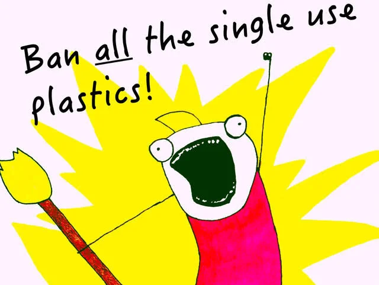

Project Team
About the Project
This project focuses on spreading awareness about plastic pollution and encouraging people to adopt eco-friendly alternatives. We directly interacted with residents and tried to influence their daily habits through simple awareness methods.
The aim was not just to inform people but to make them think about their plastic usage and motivate them to take small steps like using cloth bags.
Methodology
The methodology of this project was designed to create practical awareness about plastic pollution through direct community engagement and interactive digital tools. The project began with an initial field survey conducted among local residents in Kondhwa Budruk, Pune, where approximately 30 individuals were approached to understand their daily plastic usage habits, level of awareness, and willingness to adopt eco-friendly alternatives. Based on the responses collected, key problem areas were identified, such as continued dependence on single-use plastics due to convenience and lack of accessible alternatives.
Following this, awareness activities were carried out using simple and relatable communication methods instead of complex technical explanations. Informational posters were displayed in frequently visited areas, and one-on-one conversations were conducted to explain the harmful effects of plastic pollution on the environment, animals, and human health. As a practical intervention, cloth bags were distributed to encourage a shift from plastic bags to reusable options. A small clean-up activity was also organized to demonstrate the visible impact of plastic waste in the local area.In addition to physical activities, a web-based platform was developed as part of the project to extend awareness digitally. The website includes features such as an awareness survey to evaluate user habits, a plastic footprint calculator to estimate individual plastic usage, and an AI-based chatbot to provide guidance and answer queries related to plastic reduction and sustainability. These tools were designed to make the learning process interactive and engaging, thereby increasing user participation.
Overall, the methodology combines survey-based research, community interaction, awareness campaigns, and digital solutions to create a comprehensive approach toward reducing plastic usage and promoting sustainable behavior in everyday life.
Activities Conducted
The project involved a series of well-planned activities aimed at spreading awareness about plastic pollution and encouraging sustainable habits within the community. The first activity conducted was a field survey, where approximately 30 local residents were approached to understand their daily plastic usage patterns and level of awareness regarding environmental issues. This helped in identifying common practices such as frequent use of plastic bags and bottles.
Based on the survey findings, awareness campaigns were organized using simple and relatable communication methods. Informational posters highlighting the harmful effects of plastic pollution were displayed in prominent areas to attract attention and educate the public. In addition, direct interaction with residents was carried out to explain the long-term environmental and health impacts of plastic waste in an easy-to-understand manner.
To promote practical change, cloth bags were distributed among residents as an alternative to plastic carry bags. This step was taken to encourage people to adopt eco-friendly habits in their daily lives. A clean-up drive was also conducted in the nearby area, where plastic waste was collected to demonstrate the visible impact of pollution and to instill a sense of responsibility among participants.
Alongside these physical activities, a digital platform was developed to extend the reach of the project. The website includes features such as an awareness survey, a plastic usage calculator, and an AI chatbot to guide users on reducing plastic consumption. These digital tools were designed to make awareness interactive and accessible to a wider audience.
Overall, the activities conducted combined on-ground efforts and digital solutions to effectively communicate the importance of reducing plastic usage and adopting sustainable alternatives.
Survey Findings
The survey conducted as part of this project provided valuable insights into the plastic usage habits and awareness levels of local residents in Kondhwa Budruk, Pune. A total of approximately 30 individuals participated in the survey, representing different age groups and backgrounds. The findings revealed that while a majority of participants were aware of the harmful effects of plastic pollution, this awareness did not always translate into consistent eco-friendly behavior.
One of the key observations was that single-use plastic items such as carry bags, water bottles, and straws were still widely used due to convenience and easy availability. Many participants admitted that although they understood the environmental impact, they often chose plastic options because alternatives were not readily accessible or required extra effort. Additionally, only a limited number of respondents practiced proper waste segregation or recycling on a regular basis.
However, the survey also indicated a positive attitude toward change. A significant number of participants expressed willingness to adopt sustainable practices if provided with suitable alternatives and guidance. After brief awareness interactions, several individuals showed interest in switching to cloth bags and reusable bottles.
Overall, the survey findings highlighted a gap between awareness and actual behavior. While knowledge about plastic pollution exists, consistent action is still lacking. This emphasizes the need for continuous awareness efforts, practical solutions, and community-level initiatives to encourage long-term behavioral change.
System Input–Output
Input: User questions and survey data
Process: Awareness + chatbot logic
Output: Increased awareness and reduced plastic usage
Understanding Plastic Pollution
Plastic pollution is one of the most serious environmental challenges faced by the world today. Plastic is a non-biodegradable material, which means it does not decompose naturally and can remain in the environment for hundreds of years. Due to its low cost, durability, and widespread use, plastic has become an essential part of daily life; however, improper disposal has led to its accumulation in landfills, water bodies, and natural ecosystems.
One of the major concerns associated with plastic pollution is its impact on wildlife and marine life. Animals often mistake plastic for food, which can lead to injury, starvation, or death. In oceans, plastic waste breaks down into smaller particles known as microplastics, which enter the food chain and eventually affect human health. Additionally, burning plastic releases toxic gases that contribute to air pollution and can cause serious health problems.
Plastic pollution also affects soil quality and water systems, disrupting natural processes and reducing environmental sustainability. The excessive use of single-use plastics such as bags, bottles, and straws further worsens the situation, as these items are often discarded after a single use.
Understanding plastic pollution is essential to developing responsible habits and making informed choices. By reducing plastic consumption, reusing materials, and promoting recycling, individuals can contribute to minimizing environmental damage. Awareness and collective action are key to creating a cleaner and more sustainable future.

Awareness campaigns help people understand the seriousness of the issue and encourage them to take action in daily life.
Conclusion
In conclusion, the Plastic-Free Awareness Movement project successfully highlighted the seriousness of plastic pollution and the urgent need for sustainable practices in daily life. Through a combination of field surveys, awareness campaigns, and digital tools, the project was able to engage with the community and encourage individuals to reflect on their plastic usage habits. The survey findings revealed that while many people are aware of the harmful effects of plastic, consistent action is still lacking due to convenience and limited access to alternatives. However, the positive response from participants and their willingness to adopt eco-friendly practices indicates that awareness, when combined with practical solutions, can lead to meaningful change. The activities conducted, such as poster campaigns, distribution of cloth bags, and clean-up drives, helped demonstrate the real impact of plastic waste and motivated individuals to take small but significant steps toward reducing its usage. Additionally, the development of a web-based platform further extended the reach of the project by providing interactive tools like surveys, a plastic footprint calculator, and an AI chatbot. Overall, this project emphasizes that even small actions, when taken collectively, can contribute to a larger environmental impact. Continuous awareness, community participation, and responsible behavior are essential to reducing plastic pollution and ensuring a cleaner, healthier future for upcoming generations.
Let's check your current habits. Answer the questions below honestly.
Q1: Do you use reusable bags?
Q2: Do you avoid single-use plastic bottles?
Q3: Do you recycle plastic waste properly?
Q4: Do you carry your own water bottle?
Q5: Do you avoid plastic straws?
Estimate Your Plastic Impact
Enter the approximate number of items you use per week to see your yearly footprint.